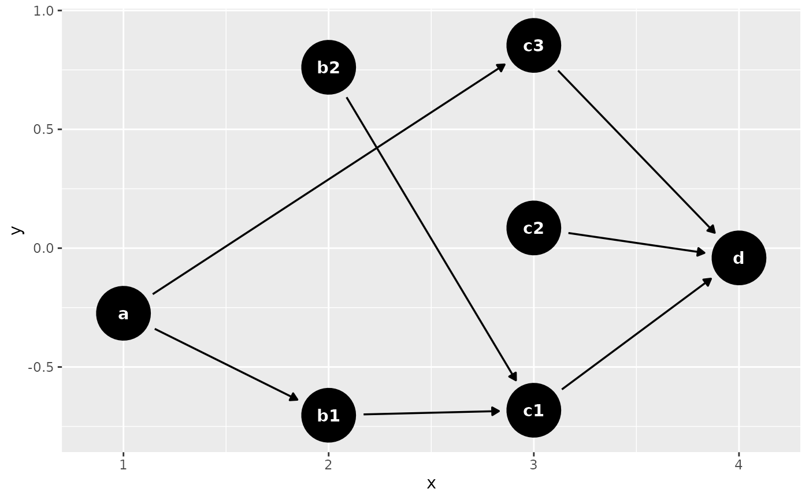
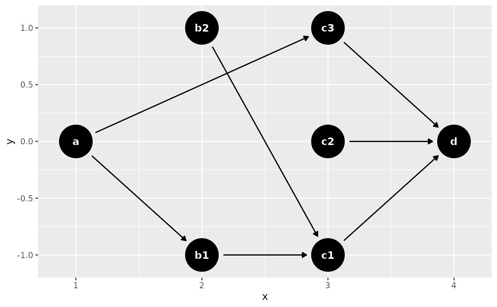
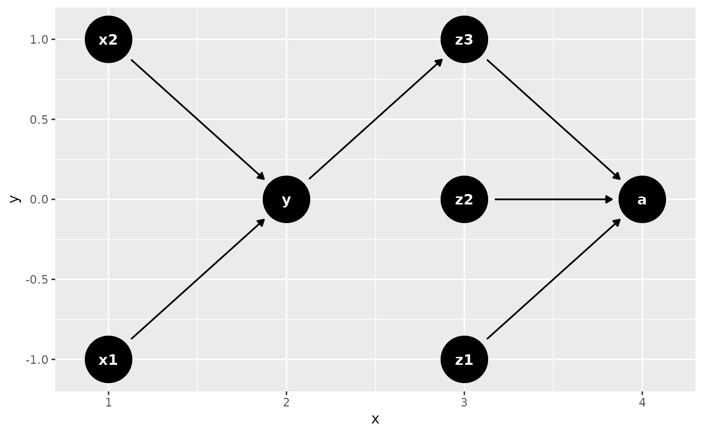

time_ordered_coords() is a helper function to create time-ordered DAGs.
Pass the results to the coords argument of dagify(). If .vars if not
specified, these coordinates will be determined automatically. If you want to
be specific, you can also use a list or data frame. The default is to assume
you want variables to go from left to right in order by time. Variables are
spread along the y-axis using a simple algorithm to stack them. You can also
work along the y-axis by setting direction = "y".
Arguments
- .vars
A list of character vectors, where each vector represents a single time period. Alternatively, a data frame where the first column is the variable name and the second column is the time period.
- time_points
A vector of time points. Default is
NULL, which creates a sequence from 1 to the number of variables.- direction
A character string indicating the axis along which the variables should be time-ordered. Either "x" or "y". Default is "x".
- auto_sort_direction
If
.varsisNULL: nodes will be placed as far"left"or"right"of in the graph as is reasonable. Default is right, meaning the nodes will be as close as possible in time to their descendants.
Examples
dagify(
d ~ c1 + c2 + c3,
c1 ~ b1 + b2,
c3 ~ a,
b1 ~ a,
coords = time_ordered_coords()
) %>% ggdag()

coords <- time_ordered_coords(list(
# time point 1
"a",
# time point 2
c("b1", "b2"),
# time point 3
c("c1", "c2", "c3"),
# time point 4
"d"
))
dagify(
d ~ c1 + c2 + c3,
c1 ~ b1 + b2,
c3 ~ a,
b1 ~ a,
coords = coords
) %>% ggdag()

# or use a data frame
x <- data.frame(
name = c("x1", "x2", "y", "z1", "z2", "z3", "a"),
time = c(1, 1, 2, 3, 3, 3, 4)
)
dagify(
z3 ~ y,
y ~ x1 + x2,
a ~ z1 + z2 + z3,
coords = time_ordered_coords(x)
) %>%
ggdag()
